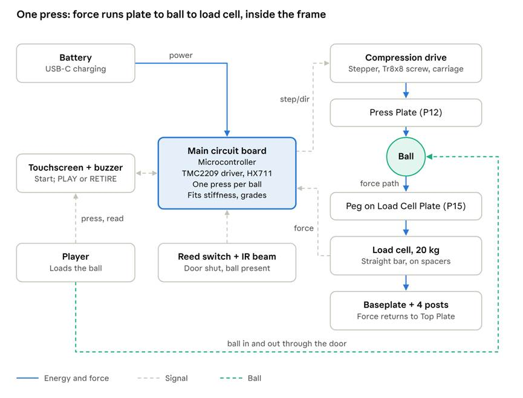
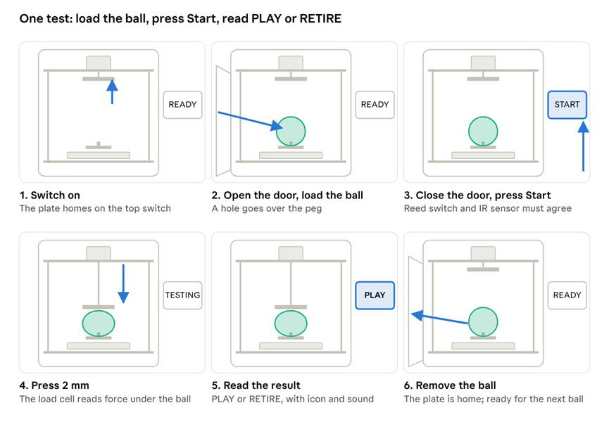
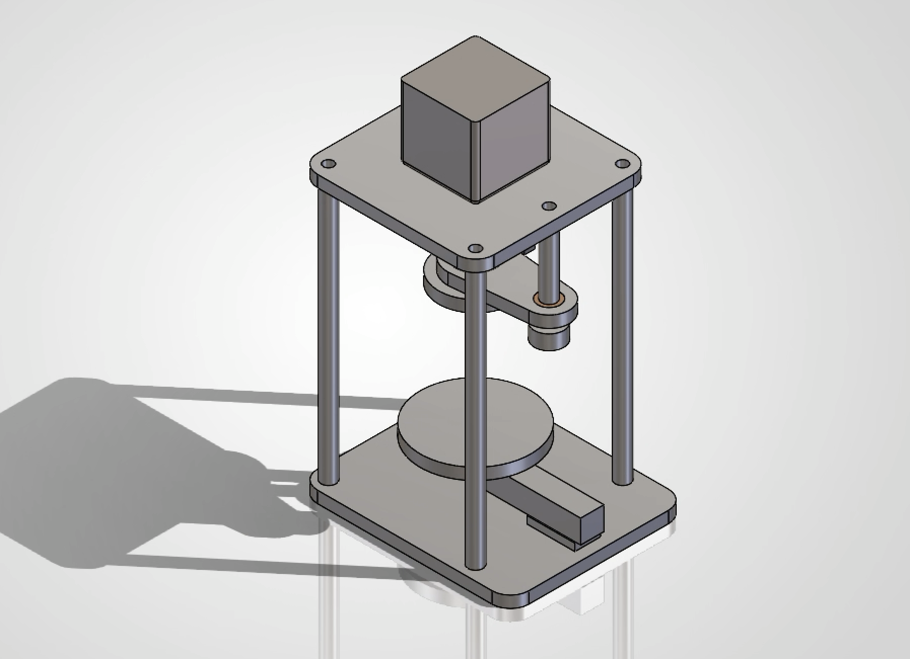
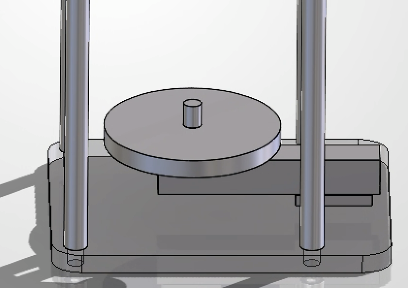
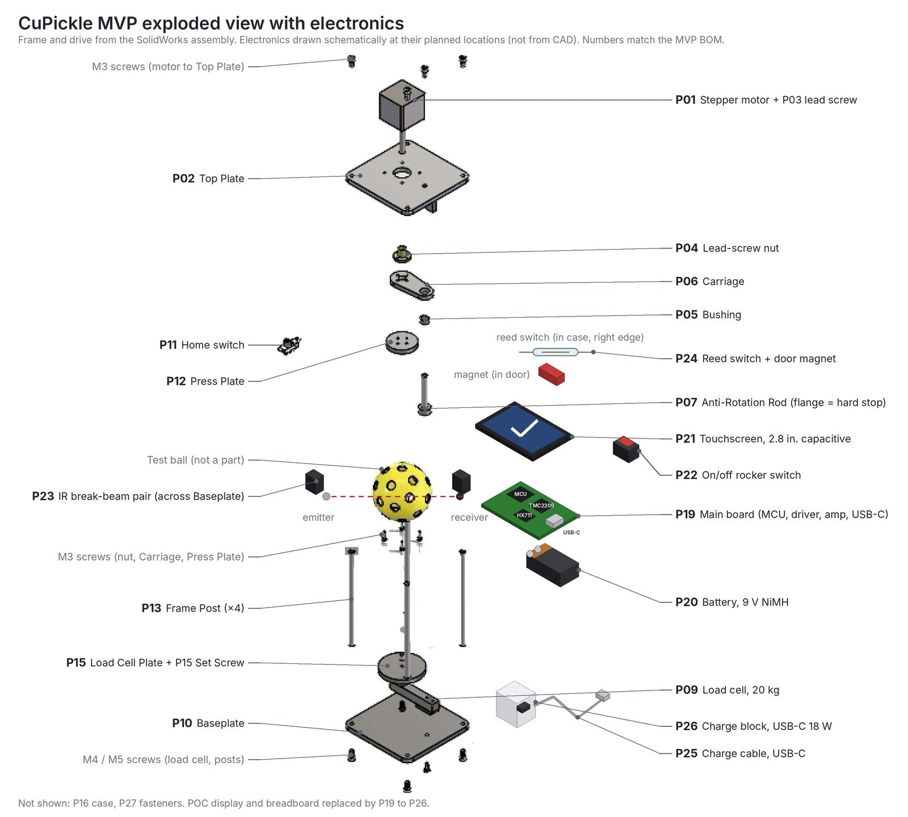
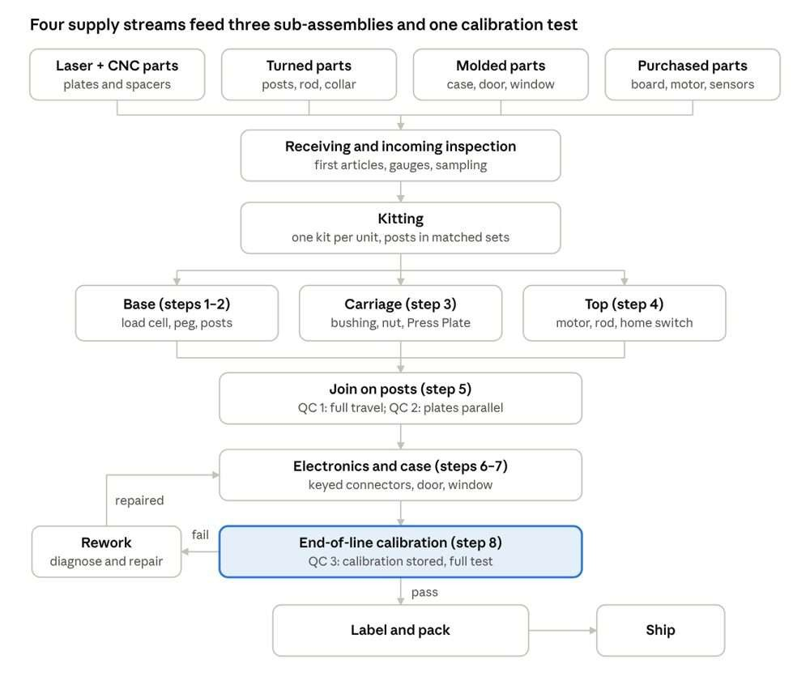
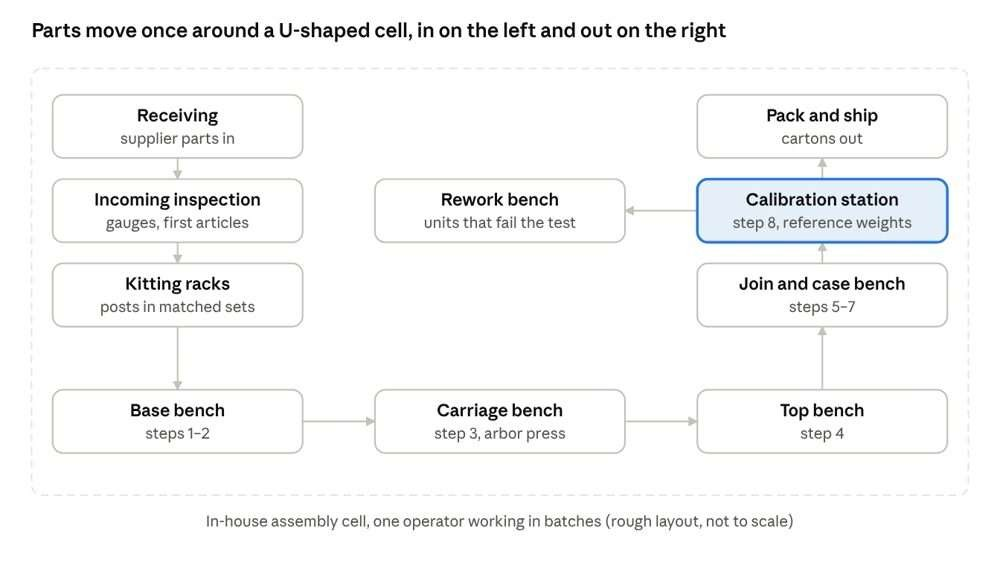

Gate Review 3 · Minimum Viable Product Design
The CuPickle minimum viable product
The CuPickle MVP is a portable, battery-powered courtside tester. It seats a pickleball on a locating peg, presses it once, a fixed 2 mm, from above while a load cell underneath measures force, and shows PLAY or RETIRE in about 10 s without damaging the ball. It is planned at 5,000 units a year for an estimated $112.34 per unit. "MVP" means this production product; "POC" means the in-house proof of concept.
MVP purpose and scope
What the MVP includes
| Subsystem | MVP content | Function delivered |
|---|---|---|
| Frame | 6061-T6 Baseplate (P10) and Top Plate (P02) tied by four Frame Posts (P13) | Keeps the test force inside a stiff frame |
| Press drive | NEMA 17 stepper with integrated Tr8×8 lead screw and brass nut (P01, P03, P04), Carriage (P06), Press Plate (P12), 4140 steel Anti-Rotation Rod (P07) with its flange as the hard stop, bronze bushing (P05), home switch (P11) | Lowers the plate onto the ball and presses it once |
| Force sensing | 20 kg straight-bar load cell (P09); Load Cell Plate (P15) with an M4 set-screw locating peg (P14) | Seats the ball and measures force under it |
| Electronics and power | Main board (P19: microcontroller, TMC2209 driver, HX711 amplifier, USB-C charging); 9 V NiMH rechargeable battery (P20); charger and cable (P25, P26) | Runs the test, computes stiffness, grades the ball |
| Interface and safety | 2.8 in. touchscreen (P21), on/off rocker (P22), IR break-beam ball sensor (P23), door reed switch with magnet (P24) | Start; PLAY / RETIRE / CHECK BALL with icon, word and sound; door interlock; ball check |
| Case | Injection-molded ABS case and door with a clear window (P16) | Encloses the pinch point; lets the player watch the press |
Functions and customer benefits
- A measured answer. Replaces the 3 s squeeze or bounce check, which 52.8% of players rate at 3 or lower of 7 for confidence.
- Same spot every time. The peg fixes where the plate lands.
- Fast. About 10 s for one 2 mm press, against the 30 s requirement.
- Non-destructive. 2 mm is under a third of the 6.35 mm certification depth; the current limit and hard stop back it up.
- Safe and readable. The door interlock stops the motor; the result uses icon, word and sound.
- Serviceable and recyclable. No adhesives; battery, board, motor and load cell are screw-fastened modules.
Requirements the MVP is designed to meet
| Customer need (QFD weight) | Specification | Target |
|---|---|---|
| Identifies low-performance balls (15%) | Grade agreement with the bounce reference; stiffness ratio vs. Pickleball Science | ≥ 90%; within 0.05 of 0.90 and 0.80 |
| Doesn't damage the ball (13%) | Rebound change after 50 tests | < 0.5 in. |
| Gives repeatable results (13%) | %GRR across operators and repeats | < 10% |
| Increases confidence (10%) | Gain on a 7-point scale | ≥ 2 points |
| Tests quickly (10%) | Pick-up to grade | ≤ 30 s |
| Affordable (10%) | Retail price | ≤ $100 |
| Fits routine (7%) | User actions | ≤ 2 |
| Portable (7%) | Packed volume and mass | ≤ 2.5 L, ≤ 2 kg |
| Measures precisely | Displacement resolution | ≤ 0.025 mm |
Deferred beyond the MVP
Testing several spots on one ball and soft-spot detection; an app or wireless data; paddle testing; an acoustic tap test and the hysteresis signal.
How the MVP differs from the GR2 concept and alpha prototype
| Element | GR2 concept / alpha prototype | MVP | Driven by |
|---|---|---|---|
| Ball location | Two rollers; ball drifted sideways | Locating peg through one ball hole | Alpha prototype; FMEA RPN 392 |
| Presses per ball | 4–6, rolled between presses | One fixed 2 mm press | Peg; Instron test; cycle time |
| Force sensing | Load cell above the ball, on the carriage | Load cell under the ball, carrying the seat | Internals layout |
| Frame and guide | 2020 extrusion, two guide rods, linear bearings | Machined 6061-T6 plates, four posts, one anti-rotation rod in a bushing | Stiffness (Driver 2) |
| Lead screw | T8×2 | Tr8×8 | Built-in force limit; speed |
| Damage signals | Stiffness and hysteresis | Stiffness only | Instron test |
| Result | Undefined "readout" | Touchscreen: check or X, PLAY or RETIRE, distinct sounds | Accessibility review (Activity 26) |
| Safety sensing | None | Door reed switch, IR ball sensor, home switch | FMEA open/close door |
| Power | Not defined | Rechargeable battery, USB-C | Courtside use |
Product architecture
The press hangs from the Top Plate and pushes down; the ball sits on the peg on the Load Cell Plate and the load cell underneath reads the force. The four posts tie the Top Plate to the Baseplate, so the test force stays inside the frame. The main board is the only link between sensing and motion: contact detection, the force stop and the grade are firmware decisions.

Subsystem interfaces
| Interface | Parts | Joint | Requirement |
|---|---|---|---|
| Posts to plates | P13 ×4, P10, P02 | 8 × M5 on a 4.185 in. square | Posts in matched-length sets so the plates stay parallel |
| Motor to Top Plate | P01, P02 | 4 × M3 on a 1.220 in. square around the Ø.8661 in. bore | Screw square to the plates |
| Rod to Top Plate | P07, P02 | 1 × M5, 1.575 in. from the bore | Same spacing as the bushing bore in P06 |
| Rod through Carriage | P07, P05, P06 | Sliding fit in a press-fit bushing | Carriage cannot rotate; no binding over full travel |
| Nut and Press Plate to Carriage | P04, P06, P12 | 4 × M3 | Press Plate parallel to Load Cell Plate |
| Ball seat | Ball, P14, P15 | Peg through one ball hole | Same spot every test |
| Load-cell mounting | P09, P10, P15 | M4 with threadlocker | Free end clears the Baseplate so the bar can flex |
| Sensing | P09 → HX711 → microcontroller | Keyed connector | 80 samples/s |
| Safety | P24, P23 → board → TMC2209 | Keyed connectors | No motion with the door open or no ball |
Material, energy and information flows
- Material: the ball goes in through the door, is pressed once and comes out unchanged.
- Energy: the battery, charged over USB-C, powers the board and stepper; the Tr8×8 screw turns motor torque into plate force.
- Information: the load cell's millivolt signal is digitized by the HX711 at 80 samples/s and paired with the step count (0.0025 mm per step); the touchscreen and buzzer report the grade.
Control and feedback
- Home: at switch-on the plate rises to the home switch.
- Check: the reed switch must read the door closed and the IR beam must see a ball before Start is accepted.
- Find contact: the plate lowers until force passes 0.5 N, so nut backlash is always taken up the same way.
- Press: 2 mm from contact at 2–4 mm/s (about 87 N on a new ball). Stall thrust is current-limited to ≤ 177 N; the P07 flange is the mechanical stop.
- Fit: stiffness is the slope of force against travel, with the steel-ball compliance subtracted.
- Grade: compared with the stored new-ball reference of the selected model; PLAY, RETIRE, or CHECK BALL if the press was invalid.
- Return: the plate homes; the door can be opened.
Operation across the full use cycle

| Stage | User input | Product response |
|---|---|---|
| Setup (first use) | Charge over USB-C; choose ball model; test one new ball | Runs steel-ball calibration; stores the new-ball reference |
| Switch on | Rocker switch | Self-check; plate homes; battery level shown |
| Load | Open door; set ball with a hole over the peg | Screen prompts "Close door" |
| Close and start | Close door; tap Start | Reed switch and IR beam must agree, otherwise Start is ignored |
| Test (intermediate state) | Watch through the window | Contact search, 2 mm press; opening the door stops the motor with no restart |
| Result | Read and decide | Large check + PLAY + rising tone, or X + RETIRE + low tone; CHECK BALL if invalid. Held until the door opens |
| Reset | Open door; remove ball | Plate home; ready for the next ball |
| Clean and maintain | Wipe plate and peg; recalibrate after a knock | Calibration prompt if the self-check drifts |
| Store and transport | Switch off; carry in a bag | Motor de-energized; case protects the press |
| End of life | Return or recycle | Screws only: aluminium, steel, ABS, board and battery separate |
The GR2 sequence counted four user actions (open, load, close, start) against a target of two; the trust study will test whether players accept it.
MVP CAD model






| Property | Value |
|---|---|
| Overall size (case) | 135 × 116 × 210 mm (5.315 × 4.567 × 7.839 in. on the P16 drawing) |
| CAD mass | 4.74 lb (2.15 kg) without battery and board |
| Critical clearance | 69.05 mm minimum plate gap at the P07 flange; ≥ 80.4 mm retracted |
| Fasteners | Three sizes: M3, M4, M5 socket head; thread-forming screws into molded case bosses |
| Tolerances | ±0.01 in. two-place, ±0.005 in. three-place (ASME Y14.5-2009); reamed bushing bore; posts matched within a set |
| Service access | Case comes off with a few screws; modules unscrew individually |
The SolidWorks mass-properties screenshot and the full drawing set are in the Appendix. The part drawings (P02–P16) are shared with the POC and shown on the POC page; in production only the finish changes.
MVP materials and components
Custom parts
| No. | Part | Qty | Material and finish | Why |
|---|---|---|---|---|
| P02, P10, P06, P12, P15 | Top Plate, Baseplate, Carriage, Press Plate, Load Cell Plate | 1 each | 6061-T6, 1/4 in. plate; tumble deburr, clear Type II anodize | Highest selection score; stiffness; recyclable |
| P13 | Frame Post | 4 | 6061-T6, 1/2 in. rod; clear anodize | Turns cleanly; light |
| P07 | Anti-Rotation Rod | 1 | 4140 pre-hardened steel, 1 in. rod; black oxide | Does not wear or gall in bronze the way aluminium can |
| P16 | Case and door | 1 | Injection-molded ABS, molded-in color, >ABS< mark; clear window | Cheapest per part at volume; no paint |
Purchased components
| Component | Part and supplier | Key specification | Availability and risk |
|---|---|---|---|
| Stepper with lead screw and nut | Iverntech 42HD4027-42 | NEMA 17, 0.40 N·m, integrated 304 stainless Tr8×8 screw, brass nut | Marketplace listing; axial-load rating unconfirmed |
| Load cell | Adafruit 4543 | 20 kg straight bar, 1.0 mV/V | In stock; $3.16 at 100+ |
| Bushing | Bronze sleeve, 8 ID × 12 OD | Pressed into P06 | Commodity |
| Main board | Contract board maker; chips TMC2209 (Analog Devices), HX711 | Microcontroller, driver, amplifier, USB-C charging; lead-free, RoHS | Board design by Ori; 4–6 weeks |
| Battery | Energizer NH22NBP, 9 V NiMH 175 mAh (DigiKey NH22NBP-ND) | Clip-in, replaceable; charged on the board over USB-C | ≈ 70 tests per charge (§16); current per test measured on the POC |
| Touchscreen | Adafruit 2770 (DigiKey 1528-2770AD-ND) | 2.8 in. capacitive TFT, 240 × 320, SPI | 18-week lead time; largest cost-down target |
| On/off switch | CIT Relay and Switch RW2123KWC | Rocker | Stock part |
| Ball-presence sensor | Adafruit 2167 (DigiKey 2167-ND) | IR break-beam pair, 3 mm | Stock part |
| Door switch | Standex-Meder ORD 324/15-20 AT | Glass reed, SPST-NO, magnet in door | Stock part |
| Home switch | Microswitch | Under the Top Plate | Commodity |
| Charger and cable | Qualtek QFWC-18-12-USCR; Amphenol 10165794-Z0050YWLF | 18 W USB-C PD; USB-C cable 0.5 m | Ships in the box |
| Fasteners | M3, M4, M5 socket head, class 8.8 | Three sizes only | Commodity |
Compatibility. The TMC2209 runs from 4.75 V, so it works from either candidate battery; the HX711 and load cell share 5 V excitation; the 8 mm lead keeps stall thrust within the load cell's rating.
Mass-manufacturing processes
Volume: 5,000 units a year (assumed). Cycle times, labour and scrap are our estimates unless sourced; laser cutting speed for 1/4 in. aluminium is 200–800 mm/min (Xometry), molding 15–45 s (Fictiv), scrap 0.5–3% (Symestic).
| Part | Starting form | Process and steps | Tooling / equipment | Cycle | Tolerance and finish | QC | Scrap | Why this process |
|---|---|---|---|---|---|---|---|---|
| P02 Top Plate | 6061, 1/4 in. plate | Fiber-laser outline and holes → CNC mill motor bore → deburr | Fiber laser; 3-axis mill, 4-up fixture | 3.5 min | ±.005; anodized | First article; hole gauge 1/50 | 2% | Laser does most features; no hard tooling |
| P10 Baseplate | 6061, 1/4 in. plate | Laser → tap M4 → tumble | Fiber laser; tapping head | 1.5 min | ±.005; anodized | Hole gauge 1/50 | 2% | Mostly through-cuts |
| P06 Carriage | 6061, 1/4 in. plate | Laser → CNC mill, ream bushing bore → deburr | Fiber laser; mill fixture; reamer | 2.5 min | Bushing bore press fit; anodized | Go/no-go pin 100% | 3% | Reamed fit needs machining |
| P12 Press Plate | 6061, 1/4 in. plate | Laser → drill and form-tap 4 × M3 | Fiber laser; CNC mill | 1.5 min | Ball face flat; anodized | Thread gauge 1/50 | 2% | Taps cannot be laser cut |
| P15 Load Cell Plate | 6061, 1/4 in. plate | Laser → drill and form-tap M4 on axis | Fiber laser; CNC mill | 1.2 min | Hole on axis; anodized | Thread gauge 1/50 | 2% | As P12 |
| P13 Frame Post ×4 | 6061, 1/2 in. rod | Bar-fed lathe: turn, face, drill and tap M5 both ends, cut off | CNC lathe, sub-spindle | 2 min each | Length matched in sets of 4 | Length gauge; kitted | 1% | One-hit lathe part |
| P07 Anti-Rotation Rod | 4140 PH steel, 1 in. rod | Bar-fed lathe: flange and shaft, drill and tap M5 → black oxide | CNC lathe; carbide tools | 3 min | Shaft smooth; flange face sets 69.05 mm | Diameter and length 1/50 | 1% | Pre-hardened: no heat treat |
| P16 Case | ABS pellets | Injection molding, bosses molded in | Steel mold with side actions | 45 s | Draft per mold design; light matte | First-shot report; visual | 3% | Cheapest per part at volume |
| Complete unit | — | End-of-line calibration and test | Calibration station, reference weights | 3 min | Force reading within spec | 100% | 1% rework | Every load cell differs |




Owned tooling (est.): case mold $35k; mill and reaming fixtures $3k; gauges $1k; board test fixture $3k; arbor press, torque drivers and 69.05 mm gauge block $2.5k; calibration station $4k; total ≈ $48.5k, about $3 per unit over three years. At 14 min a unit, a year is about 1,200 labour-hours, so the cell runs in batches. Design for environment in production: buy near-net stock, recycle aluminium chips, minimum-quantity lubrication, compact cardboard packaging.
MVP assembly plan
Three sub-assemblies (base, carriage, top) are joined on the posts and closed in the case: about 14 minutes per unit including the final test (Figure 6).
| Step | Operation | Parts | Joining | Tools | Check | Time |
|---|---|---|---|---|---|---|
| 1 | Base: load cell's fixed end to the Baseplate; Load Cell Plate on the free end; thread in the peg | P10, P09, P15, P14 | M4 + threadlocker | Torque driver | Free end clears the Baseplate | 1.5 min |
| 2 | Four posts to the Baseplate from below | P13 ×4 | 4 × M5 | Torque driver | Posts seated flat | 1 min |
| 3 | Carriage: press bushing in; nut on top, Press Plate below | P06, P05, P04, P12 | Press fit; 4 × M3 | Arbor press, torque driver | Bushing square | 1.5 min |
| 4 | Top: motor on top, rod and home switch underneath | P02, P01, P07, P11 | 4 × M3; 1 × M5 | Torque driver | Rod square to plate | 1.5 min |
| 5 | Join: Carriage onto the screw, rod through bushing; Top Plate onto posts | Sub-assemblies | 4 × M5, cross pattern | Torque driver; 69.05 mm gauge block | QC1 full travel by hand; QC2 plates parallel; QC3 gap at the stop 69.05 mm | 2 min |
| 6 | Electronics into case; plug keyed connectors | P19–P24, P16 | Screws into molded bosses | — | Connectors cannot be swapped | 2 min |
| 7 | Seat frame in case; close case | P16 | Thread-forming screws | Torque driver | Case closes fully | 1.5 min |
| 8 | End-of-line calibration and test | Complete unit | — | Calibration station | QC4 calibration stored; full test; door opening stops motor | 3 min |
Torques (class 8.8 into tapped 6061, about 55% of steel-on-steel so aluminium threads do not strip): M3 0.7 N·m, M4 1.6 N·m, M5 3.2 N·m. Design for assembly: every step goes top-down onto the Baseplate; three screw sizes; keyed connectors; matched post sets; the hard stop is machined into the rod, so there is nothing to set. Service: no adhesives; battery, board, motor and load cell come out separately. Assembly risks: mismatched posts tilt the plate (QC2); calibration time per unit (3 of 14 min).
Preliminary MVP bill of materials
| Item | Part no. | Description | Qty | Custom / purchased | Material | Supplier | Supplier part no. | Process ref. | Unit cost | Total | Notes |
|---|---|---|---|---|---|---|---|---|---|---|---|
| 1 | P01, P03, P04 | NEMA 17 stepper, integrated Tr8×8 screw and brass nut | 1 | Purchased | Steel, copper, stainless | Iverntech | 42HD4027-42 | — | $12.00 | $12.00 | Volume price est.; screw cut to length |
| 2 | P02 | Top Plate | 1 | Custom | 6061-T6 | Laser + CNC shop | — | P02 sheet | $4.50 | $4.50 | Anodize adds ~1 week |
| 3 | P05 | Bronze bushing, 8 ID × 12 OD | 1 | Purchased | Bronze | Distributor | — | — | $0.50 | $0.50 | |
| 4 | P06 | Carriage | 1 | Custom | 6061-T6 | Laser + CNC shop | — | P06 sheet | $3.50 | $3.50 | |
| 5 | P07 | Anti-Rotation Rod with hard-stop flange | 1 | Custom | 4140 PH steel, black oxide | CNC turning shop | — | P07 sheet | $2.50 | $2.50 | 69.05 mm gap |
| 6 | P09 | Load cell, 20 kg straight bar | 1 | Purchased | Aluminium | Adafruit | 4543 | — | $3.16 | $3.16 | 100+ price |
| 7 | P10 | Baseplate | 1 | Custom | 6061-T6 | Laser shop | — | P10 sheet | $2.50 | $2.50 | |
| 8 | P11 | Home switch (microswitch) | 1 | Purchased | — | Distributor | — | — | $0.40 | $0.40 | |
| 9 | P12 | Press Plate | 1 | Custom | 6061-T6 | Laser + CNC shop | — | P12 sheet | $2.00 | $2.00 | |
| 10 | P13 | Frame Post | 4 | Custom | 6061-T6 | CNC turning shop | — | P13 sheet | $1.20 | $4.80 | Matched sets |
| 11 | P14 | Locating peg, M4 × 0.7 × 8 mm socket set screw | 1 | Purchased | Steel | Fastener distributor | — | — | $0.10 | $0.10 | |
| 12 | P15 | Load Cell Plate | 1 | Custom | 6061-T6 | Laser + CNC shop | — | P15 sheet | $2.00 | $2.00 | M4 tapped for peg |
| 13 | P16 | Case and door with window | 1 | Custom | ABS | Injection molder | — | Case sheet | $3.50 | $3.50 | Mold lead 8–12 weeks |
| 14 | P19 | Main board: MCU, TMC2209, HX711, USB-C charging | 1 | Purchased (custom design) | FR-4, lead-free | Contract board maker | — | Board maker | $15.00 | $15.00 | 4–6 weeks |
| 15 | P20 | Rechargeable battery, 9 V NiMH 175 mAh | 1 | Purchased | NiMH | Energizer via DigiKey | NH22NBP-ND | — | $9.00 | $9.00 | Price est.; replaceable |
| 16 | P21 | Touchscreen, 2.8 in. capacitive TFT | 1 | Purchased | — | Adafruit via DigiKey | 1528-2770AD-ND | — | $19.95 | $19.95 | Qty-1 price; 18-week lead |
| 17 | P22 | On/off rocker switch | 1 | Purchased | — | CIT Relay and Switch | RW2123KWC | — | $0.80 | $0.80 | |
| 18 | P23 | IR break-beam pair, 3 mm | 1 | Purchased | — | Adafruit via DigiKey | 2167-ND | — | $2.00 | $2.00 | |
| 19 | P24 | Reed switch, SPST-NO, with door magnet | 1 | Purchased | — | Standex-Meder | ORD 324/15-20 AT | — | $0.80 | $0.80 | Safety feature |
| 20 | P25 | USB-C to USB-C cable, 0.5 m | 1 | Purchased | — | Amphenol ICC | 10165794-Z0050YWLF | — | $3.85 | $3.85 | In the box |
| 21 | P26 | 18 W USB-C PD wall adapter | 1 | Purchased | — | Qualtek | QFWC-18-12-USCR | — | $6.00 | $6.00 | In the box |
| 22 | P27 | Fasteners: M3, M4, M5 socket head + case screws | 1 set | Purchased | Steel 8.8 | Fastener distributor | — | — | $1.00 | $1.00 | Three sizes |
| 23 | — | Rubber feet | 4 | Purchased | Rubber | Distributor | — | — | $0.05 | $0.20 | |
| 24 | — | Packaging and quick-start card | 1 | Purchased | Cardboard | Packaging supplier | — | — | $1.80 | $1.80 | Compact carton |
| Parts total | $101.86 | ||||||||||
| Assembly and calibration labour (14 min at about $30/h) | $7.25 | ||||||||||
| Tooling share (≈ $48.5k over 15,000 units) | $3.23 | ||||||||||
| Estimated unit cost | $112.34 |
Table. MVP BOM from Activity 24. Unit costs are preliminary; cost is finalized for Design Expo (Activity 29).
MVP design conclusions
| Requirement | How the MVP addresses it | Evidence status |
|---|---|---|
| Identifies low-performance balls | One press at the peg; ratio to a same-model reference | Shown with 6-position averages; single-press accuracy not yet shown |
| Repeatable results | Peg; stiff frame; 0.5 N contact threshold; steel-ball correction | Analysis: ratio error 0.005; %GRR not tested |
| Measures precisely | 1/16 microstepping, 0.0025 mm per step | Analysis; dial-indicator check pending |
| Doesn't damage the ball | 2 mm press; current limit; flange hard stop | Not tested (50-test rebound) |
| Tests quickly | One press at 2–4 mm/s | Time model: about 10 s |
| Increases confidence | Visible press; icon + word + sound | Not tested (user study) |
| Fits routine | Load, close, start | Four actions against a ≤ 2 target |
| Portable | Compact frame and case | 3.3 L envelope and about 2.2 kg vs. 2.5 L and 2 kg: not yet met |
| Affordable | Off-the-shelf drive and load cell; molded case | $112.34 unit cost vs. $100 price: not yet met |
Strongest evidence. The Instron study (every used ball's mean below every new ball's at 5 mm; 8–12% gap at every depth; linear to 5 mm); the parameter analysis (compliance stack, power-screw model, structural and fatigue checks, time budget); and a manufacturing plan with a process, cycle time, inspection and scrap rate for every custom part.
Remaining questions. Single-press accuracy at the peg; 2 mm vs. deeper presses; absolute stiffness 2.3× published (fixture check); tests per charge on the 9 V NiMH; size, mass and actions against targets; unit cost; motor axial-load rating; case tooling lead time.
Not represented by the POC. Battery and USB-C charging, the custom board, touchscreen and buzzer, door interlock, IR ball sensor, home switch, molded case, anodized finish, steel rod and production-process variation.
Engineering before production. Thresholds set per ball model on balls with known play history; gauge R&R on the first custom board; NiMH charging circuit with charge termination and charging compliance; mold design and drop tests on molded cases; cost model and cost-down (Activity 29).
Readiness. The design is ready to advance with specified revisions: the peg removes the highest-RPN failure mode and a motor, and the analysis shows the frame, drive and load cell are adequate. It is not ready for commercial production until single-press accuracy, battery, size and cost are resolved (recommendation).